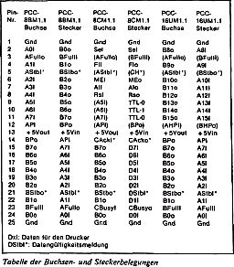

Nascom Journal |
Oktober 1981 · Ausgabe 10 |
als sehr zeitsparend und nützlich erwiesen.
Literaturverzeichnis:
Nascom I Construction articel
Nascom I Software notes
Nascom II Documentation
Ausgegangen wurde von den Erfahrungen mit der seriellen V.24-Schnittstelle und der Druckerschnittstelle von Centronics. Von der Druckerschnittstelle wurden die Handshakesignale Stb und Full ( Busy + Ack) übernommen. Da mit der V.24-Schnittstelle die Erfahrung gemacht wurde, daß Datenübertragungen häufig nur in einer der beiden möglichen Richtungen erfolgen, werden die Signale beim PCC-Interface so über die Leitungen geführt, daß jeweils die freien Leitungen als Schirm für die gerade aktive Richtung wirken. Der Aufbau der Steckerbelegung ermöglicht den Einsatz eines Flachbandkabels zur Verbindung zwischen zwei Rechnern. Das 25polige Flachbandkabel kann daneben auch als einfaches Verlängerungskabel eingesetzt werden; falls am Flachbandkabel noch ein zusätzlicher Stecker montiert wird, kann das Kabel sogar als IEC-Bus-Kabel Verwendung finden.
Die PCC-Schnittstellen sind zur parallelen Übertragung zwischen zwei Geräten konzipiert. Durch einfaches Umschalten der Betriebsart des eingesetzten parallelen Ein-Ausgabebausteins kann von einer 8-Bit Datenübertragung in zwei Richtungen auf eine 16-Bit-Datenübertragung in zwei Richtungen umgestellt werden (nur vom Rechner zur Peripherie gedacht).
über die PCC-Schnittstellenfamilie können nicht nur Kopplungen zwischen „intelligenten“ Geräten, sondern auch zwischen Rechnern und einfachen Zusätzen verwirklicht werden (z.B. Zusatztastur, Lesestift, Zusatzanzeige, einfache Testgeräte oder Steuerungen). Auch lassen sich einfache Adapter zu anderen vorhandenen Schnittstellen ohne eigene Spannungsversorgung einsetzen.
Der Ablauf der Datenübertragung ist für beide Richtungen gleich: Der Sender prüft das Signal BFullI. Solange BFullI gleich „1“ (TTL-Pegel) ist, darf der Sender keine Datengültigkeitsmeldung (BStbo) auslösen (die Datenleitungen Bxo sind ohne Bedeutung für den Empfänger). Sobald BFullI gleich „0“ ist, werden die Daten vom Ausgangspuffer des Senders an die Datenleitungen Bxo angelegt. Die Gültigkeit der Daten wird dem Empfänger mit der fallenden Flanke des Signals BStbo vom Sender mitgeteilt, Der Empfänger signalisiert mit der steigenden Flanke des Signals BFullI an den Sender, daß die Daten in den Eingangspuffer übernommen worden sind. Spätestens jetzt muß der Sender das Signal
BStbo auf „1“ (TTL) wechseln. Die Datenleitungen sind dabei für den Empfänger ohne Bedeutung. Sobald der Eingangspuffer vorn Empfänger leer und bereit für neue Daten ist, wechselt das Signal BFullI zum Sender von logisch „1“ auf „0“.
Ein nicht angeschlossener Empfänger entspricht „dauernd belegt“ (BFull = „1“). Rückmeldungen (zum Beispiel Drucker wartet, weil Papier fehlt) werden nicht über spezielle Zusatzleitungen, sondern als Folge von ASCII-Zeichen realisiert. Der Inhalt der Rückmeldungen kann damit beliebig vielfältig gestaltet werden.
Die Signalpegel entsprechen in der Normalausführung der PCC-Schnittstelle der TTL Spezifikation. Die Bezeichnung der Schnittstellen ergibt sich aus der Zahl der Datenleitungen gefolgt von der Art der Datenübertragung und dem mechanischen Aufbau. Ein „B“
| Seite 21 von 28 |
|---|